Chapter 3 TIMSS IDE Walkthrough
There are four general steps for exploring each IDE page (see exhibit 3). Each step is described in more detail in the following sub-sections.
Exhibit 3. What you will see in the IDE environment and what each step entails

1. Select Criteria
1.A. Overview
Your data query in the IDE (International Data Explorer) begins on the Select Criteria screen (see exhibit 2).
Choose one Subject, one Grade, and one or more Measures, Years, and Jurisdictions for the data you wish to view or compare.
Use the Reset button, located in the upper-right portion of the screen (just below the Help button), to cancel your selections and begin again.
Click on a red sideways-facing arrow (►) to open up a category and click
on a red downward-facing arrow (▼) to close a category.
Exhibit 2. Selecting criteria
1.B. Choose Subject
Under Subject, you have the choice of Mathematics and Science, TIMSS Advanced: Advanced Mathematics, or TIMSS Advanced: Physics.
1.C. Choose Grade
Under Grade, choose Grade 4, Grade 8, or End of High School. Once a grade is chosen, the screen resets and you can select Year(s), Measure(s), and Jurisdiction(s).
1.D. Choose Year
At the top of the Measure and Jurisdiction sections, you have the choice of selecting 2019, 2015, 2011, 2007, 2003, 1999, and/or 1995 by checking the appropriate box. To include data from all years, check the “All Years” box to the left of the individual years. Mathematics and science data are available for 2019, 2015, 2011, 2007, 2003, 1999, and 1995. In 1999, no data for grade 4 were collected in mathematics or science. Advanced mathematics and physics data are available for 2015 only.
1.E. Choose Measure
After choosing a subject, you can choose between the overall scale and/or any of the subject’s subscales. The overall scale and subscales can be used for trend analyses across years where applicable.
In addition, there are a number of continuous variables other than scale scores that you may choose as a measure of analysis. These variables fall under different categories, such as “Student and Family Characteristics” and “Teacher Background Characteristics, Formal Education, and Training” and include variables such as age, teaching experience, and class size.
1.F. Choose Jurisdiction
With your Measure(s) and Year(s) selected, next choose at least one Jurisdiction.
Jurisdictions are found under the following groups: Countries, U.S. Jurisdictions, and Benchmarking Participants. There is also a group category called Average, with options to display the Average of Countries and the Average of Selected Countries/Participants. Average of Countries displays the average statistic for all available jurisdictions under the “Countries” group, except when “All students” is selected at step 2, in which case Average of Countries displays the TIMSS scale centerpoint of 500.
The general procedures for selecting one or more jurisdictions are as follows:
To open or close jurisdictions, click on the arrow. Jurisdictions in the group are open and can be selected when the red arrow points down (see exhibit 3).
Click the checkboxes next to the specific jurisdictions that you are interested in, or uncheck those jurisdictions that you wish to deselect. If you click the checkbox next to the group name (e.g., “Countries”), you will select all the jurisdictions within that group. If desired, uncheck the group name to deselect all.
If you want to close a group (e.g., close the list of countries in order to readily see the benchmarking participants), click the red arrow next to the group name. The closed group’s arrow points to the right. Be advised that closing the group will not deselect your choices.
Exhibit 3. Choosing jurisdictions 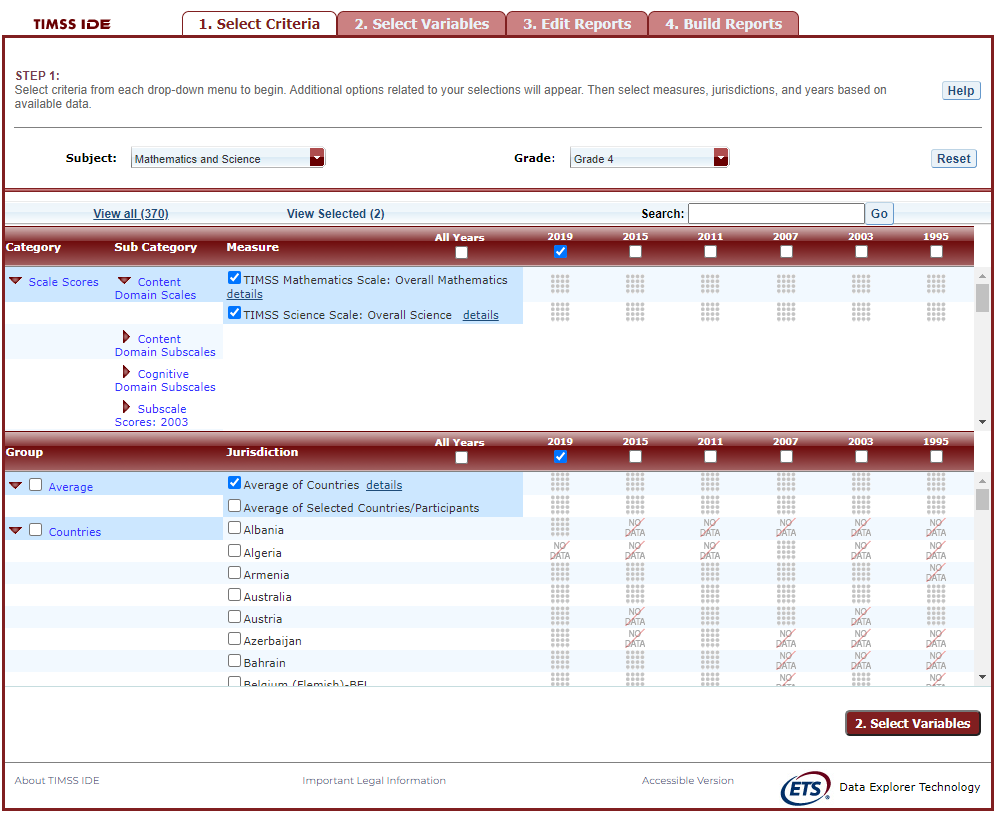
To continue in the IDE, click the Select Variables button at the bottom right of the page or the tab at the top of the page to go to the next screen (see exhibit 3).
2. Select Variables
2.A. Overview
Step 2, Select Variables, can only be accessed after choosing criteria at step 1, Select Criteria.
To continue your data query and edit a report, you must choose at least one variable on this screen. You can browse for variables using the Category and Sub Category lists or by using the Search function (see exhibit 4). You can return to this screen to change variable selections at any time.
Exhibit 4. Selecting variables overview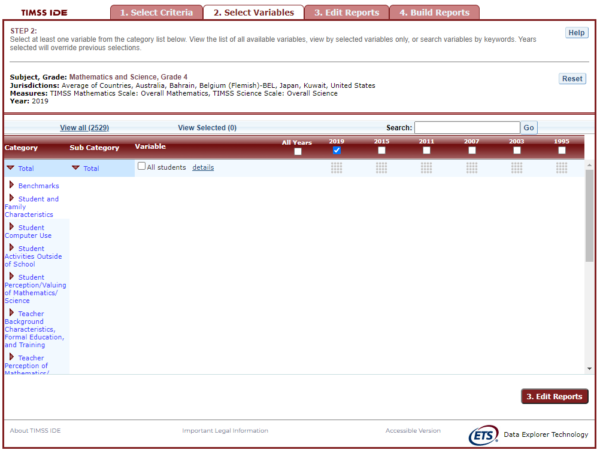
2.B. Search Using Category and Sub Category Lists
On the Select Variables screen, choose at least one variable for your report. One way to do this is to search for variables using the Category and Sub Category lists. If you don’t wish to choose from any of the specified categories and subcategories, select All students in the Total category.
The variables shown are tied to the criteria you selected at step 1 (Subject, Grade, Jurisdiction, Measure, and Year), which are indicated at the top of the screen. To change any of these criteria, return to step 1, Select Criteria.
To browse for variables, get details about them, select them, and view them:
Click the red arrows to open and close categories and subcategories of variables (see exhibit 5).
Click details or hide details to show or hide the full title of a given variable, the TIMSS ID, and the values (i.e., value labels). Note that some variables have the same or similar short titles, but comparing details will show you how they differ. See the example in exhibit 5 below, which shows two variables titled Gen\speak language of test at home. “Gen” refers to variables that are general cross-subject variables. The differences between these two variables are described in the details.
Click the checkbox next to a variable to select it for your analysis/report. You will see the count increase next to View Selected.
Click the View Selected tab to see the variables you have chosen. To return to the full list of variables by category, click the View all tab.
Remember to select the year for which you wish to build a report and make sure that data are available for your chosen year and variables.
Searching variables is an option from the Search box. See Section 2.C Search Function for more details about this function.
Exhibit 5. Select variables using category and sub category lists
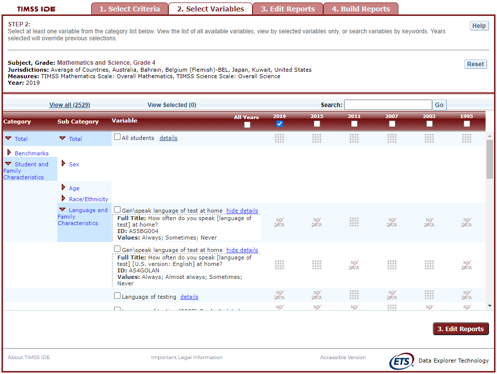
When you have selected the variable(s) you want to include, continue by clicking the Edit Reports button at the bottom of the page or the tab at the top of the page to go to the next screen.
2.C. Search Function
The second way to search for variables is to use the Search function on the Select Variables screen.
Type a term in the Search box and click Go (or hit “Enter” on your keyboard) to find variables by keywords in the question and/or details for the variable (see exhibit 6). If you use multiple keywords, “and” is assumed. You can narrow your search by using “or,” “not,” or “and not.” The search function operates on an exact phrase if it is contained in quotes. The variable(s) that include the search term(s) in the question or its details will be listed.
Exhibit 6. Select variables using the search function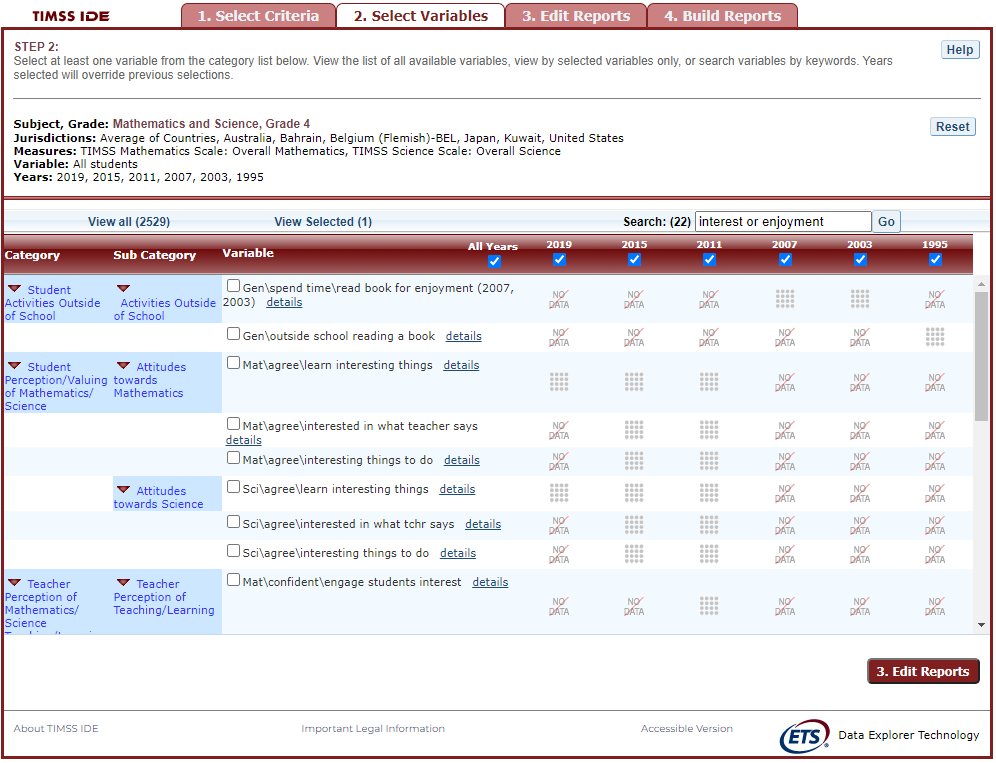
When you have selected the variable(s) you want to include, continue by clicking the Edit Reports button at the bottom of the page or the tab at the top of the page to go to the next screen.
3. Edit Reports
3.A. Overview
You can access step 3, Edit Reports, after choosing criteria at step 1, Select Criteria, and choosing variables at step 2, Select Variables. The IDE will automatically build reports based on your selections from steps 1 and 2. However, at step 3, the Edit Reports phase, you may modify your selections for each report.
At this step, you can
preview and edit the layout of your reports;
copy reports or create new reports based on the variables selected;
change formatting options, such as number of decimal places to display, for all reports (these may also be changed in individual reports, but format options can overwrite previous edits);
change statistics options, such as averages, for all reports (these may also be changed in individual reports, but statistics options can overwrite previous edits);
select reports to be built into tables and charts at step 4, Build Reports; and
delete reports.
Using your chosen criteria, the IDE will return a separate data report for each variable you have chosen. If you have selected two or three variables (not counting All students), you will also see a cross-tabulated report for these variables. If you have chosen four or more variables, you will get tables for each variable, but you will not get the cross-tabulation. If your selected criteria include more than one measure (e.g., overall science scale and one or more science subscales or continuous variables), a separate set of data reports will be generated for each measure (see exhibit 7).
Exhibit 7. Edit reports overview
The Edit Reports step shows detailed information on the layout of your reports. The Report column indicates the report, or cross-tabulation report, number based on the variable(s) chosen during the criteria selection. Under the All tab, reports may be chosen for the report-building phase, either by selecting All or selecting individual reports. The Action column gives you the option to Preview, Edit, Delete, or Copy the report. The Measure column shows which measure the report will portray. The Variable column indicates the variable(s) included in the report. The Year column shows which years you have selected for comparison. The Jurisdiction column shows the countries and subnational education systems selected for comparison, and the Statistic column provides the type of statistic output that will be generated in the report-building phase.
3.B. Preview Report
Select Preview, in the Action column (see exhibit 7), to see how your report will be laid out. The preview will not provide actual data, but will show how the data will be arranged in rows and columns (see exhibit 8). You can select Preview at any time to see how your changes will affect the report’s final layout.
Exhibit 8. Using preview report
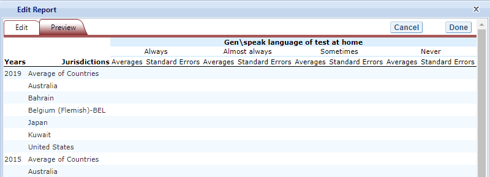
3.C. Edit Report
To edit the report, select the Edit command, in the Action column (see exhibit 7). (Another way to edit a report is to select the Edit tab when you are previewing a report.) The following can be done using the edit function (see exhibit 9):
- Name your report. You have the option of giving each report a distinctive name, up to a limit of 50 characters, using only letters, numbers, spaces, underscores, and hyphens. (Otherwise, by default, the report is named Report 1, Report 2, etc., or Cross-Tabulated Report 1, Cross-Tabulated Report 2, etc.)
Select a measure. You can choose a measure if more than one was slected at step 1.
Select which jurisdictions, variables, years (if applicable), and statistics to include (out of the selections previously made at steps 1 and 2). You can select up to two statistics options from the following: averages, percentages, standard deviations, and percentiles. (For further information, see Section 3.G. Statistics Options.)
To create a new variable while editing a report, click on Create New… under the Variable heading. Section 3.D below explains the process for creating a new variable.
Change the table layout by dragging elements to determine which items will appear in rows and which will appear in columns. Some of the arrangements will not be permissible, but a pop-up alert will explain this.
Exhibit 9. Editing reports
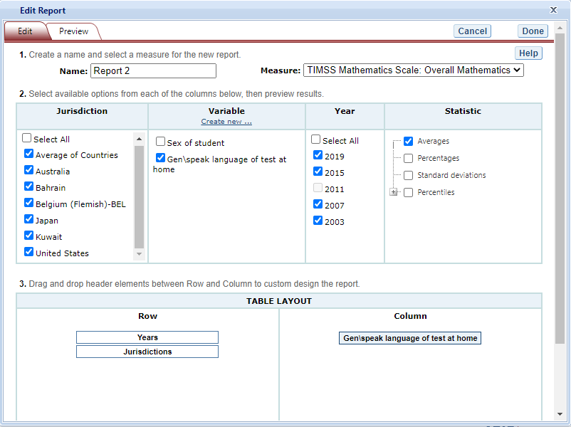
To save changes, make sure to select Done in the upper-right portion of the screen before closing the Edit Report window.
3.D. Create New Variables
To create a new variable, select Edit, in the Action column, and select Create new… under Variable (see exhibit 9 above). The new variable is created by collapsing values for an existing variable. The steps are as follows:
Click Create new... under the Variable heading.
Select the variable for which you wish to collapse values.
Select the values you want to collapse by checking the boxes to the left of the values. In the example below (see exhibit 10a), “Always” and “Almost always” are checked
Create a name for the new value, and press Create. The collapsed values will appear in gray to indicate that they have already been used.
Repeat steps 3 and 4 to collapse other values if applicable. In the example below (see exhibit 10b), “Sometimes” and “Never” will be collapsed into “Sometimes or Never”. Note that it is also possible to leave “Sometimes” and “Never” uncollapsed, thus skipping step 5.
Press Done when the screen has refreshed.
The new variable will appear in the Variable list in the Edit Report window, designated as “collapsed.”
Check the box next to the new variable to view it in the report. You can click Preview to see how the table will be laid out before retrieving data.
Exhibit 10a. Creating new variables
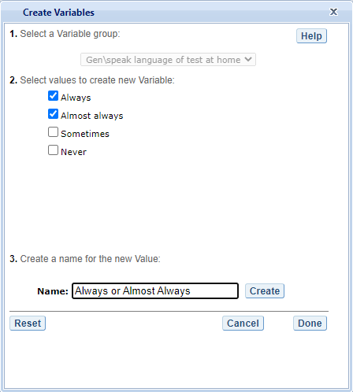
Exhibit 10b. Creating new variables
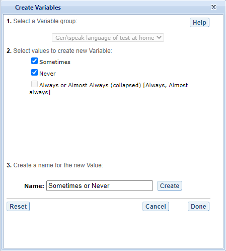
A new variable that you create is applicable only to a specific report; it does not apply to the other reports listed on the Edit Reports screen. For example, if you selected multiple measures of science literacy for analysis, then you would need to create the new variable for each measure, or create a copy of the report and edit it accordingly. To do the latter, click on Copy report on the Edit Reports screen (copied reports appear at the end of the list of reports) and then, for the new copy, click on Edit (using the above example, you can change the measure and give the report a new name).
You can repeat the process and combine different values of a variable to create additional new variables. Using the Create New Report function, you can create a new report for each new variable that you create. (For further information, see section 3.E. Create New Report.)
If you selected two or three variables from which to create new variables, you can repeat the process for each of them. Using the Create New Report or Edit Report function, these collapsed variables will be listed and available for cross-tabulation (see exhibit 11). If you have chosen four or more variables (not counting All Students), you won’t get the cross-tabulation. You can click Preview to see how the table will be laid out before retrieving data.
Exhibit 11. Edit reports with collapsed variables
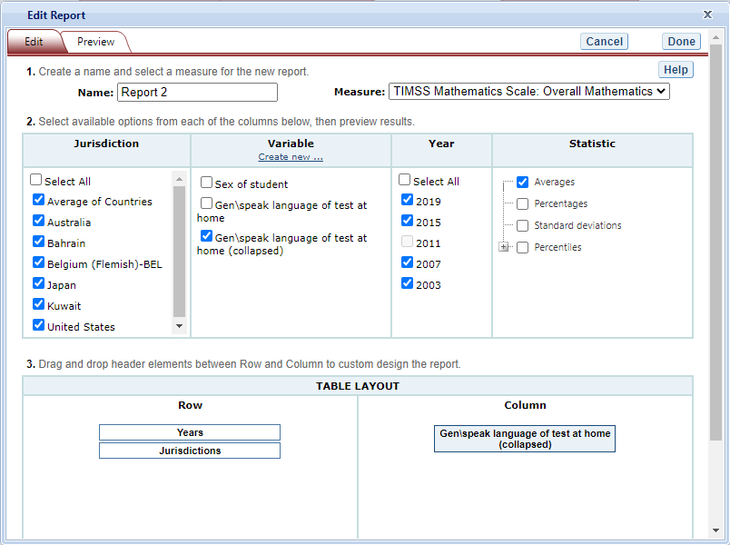
3.E. Create New Report
From the main Edit Reports screen, clicking on Create New Report brings up the same options as Edit Report, but with no checkboxes marked and without any new variables you may have created. Thus, Create New Report provides a clean slate for your selections from the first two steps, Select Criteria and Select Variables (see exhibit 12). Each new report you create will appear at the end of the list of reports. If you do not give the report a specific name, it will be called “New Report.”
Exhibit 12. Creating new reports
3.F. Format Options
From the main Edit Reports screen, clicking on Format Options will allow you to make formatting changes applicable to all the reports listed. The following formatting options are available using this function (see exhibit 13):
Variable Labels gives you the option to display a more detailed description of the variables selected in a query (Long) than the default label (Short). For variables from questionnaires, the full text of the question is displayed when Long is selected. Be advised that the length of the extra detail may sometimes interfere with table formatting.
Show data for values categorized as Missing will include the percentage of students in the total sample or in a reporting group for whom membership in a particular response category is unknown because no response was given by the students, their teacher, or their school. The percentage of “missing” will be shown in the right-most table column. Missing data are available only for queries that involve percentages as the statistic type. Unless you check this option, the default is for missing responses not to be included in the percentage distribution shown.
Decimal Places allows you to specify the level of precision for a particular statistic. Depending on the value range of the dependent variable (for example, the dependent variable “TIMSS Mathematics Scale: Overall Mathematics” ranges from 0 to 1000; the dependent variable “Students like learning mathematics scale \[AS5BG071\]” ranges from 4 to 13), the default decimal places for a report could be from zero to three. Also, standard errors will be shown to one more decimal place than is shown for a particular statistic. For example, if you request that average scores be displayed to one decimal place (by default, the average scores are displayed as whole numbers), the corresponding standard errors will be displayed to two decimal places. If you export to Excel, you will be able to increase the number of decimal places in most cases. Note that only integer-level precision is allowed for percentages; that is, the number of decimal places is fixed at “none” for percentages and the corresponding standard errors are shown to one decimal place.
Include gives you the option of showing standard errors. By default, standard errors are shown inside parentheses, but you have the option of choosing to show them without parentheses. You can preview the effects of your selection in the Sample Display area (see the blue-shaded box at the bottom of exhibit 13).
Exhibit 13. Format options
Be advised that the choices you make in the Format Options window will apply to all reports and cannot be changed for individual reports. Use the Reset button, located in the upper-right portion of the main Edit Reports screen (just below the Help button), to restore the Format Options to the default settings (although caution is advised, as this will also delete any new reports that you have created).
3.G. Statistics Options
Available only from the main Edit Reports screen, clicking on Statistics Options allows you to designate up to two statistics. The selections you make are applicable to all the reports listed, although you can also change the statistics for an individual report when you edit it. (For further information, see Section 3.C. Edit Report.)
The following statistics options are available (see exhibit 14):
Averages. This statistic provides the average value for a selected continuous variable or score (i.e., overall score or subscale score). For the TIMSS assessment, student performance is reported on scales that range from 0 to 1,000. By default, the standard errors of the scores are shown in parentheses.
Percentages. This statistic shows the percentage of students as a row percentage. For example, if the first column lists countries, then each country will display its own percentage distribution across its row. By default, percentage distributions do not include missing data. For information on how to show data for values categorized as missing, see Section 3.F. Format Options.
Standard deviations. The standard deviation is a measure of how widely or narrowly dispersed scores are for a particular variable. Under general normality assumptions, 95 percent of the scores are within two standard deviations of the mean. For example, if the average score of a variable is 500 and the standard deviation is 100, it means that 95 percent of the scores in this variable fall between 300 and 700. The standard deviation is the square root of the variance.
Percentiles. This statistic shows the threshold (or cutpoint) score for the following:
10th percentile—the bottom 10 percent of students
25th percentile—the bottom quarter of students
50th percentile—the median (half the students scored below the cutpoint and half scored above it)
75th percentile—the top quarter of students
90th percentile—the top 10 percent of students
Exhibit 14. Statistics options
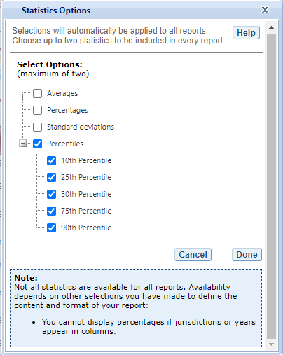
As previously noted, the selections you make in Statistics Options will be applied automatically to all reports, although you can change the statistics for an individual report when you edit it. Be advised that if you use Statistics Options after editing the statistics in one or more of your individual reports, the statistics options selected will overwrite your previously edited selections. If you wish to use the same criteria and variables in a report with a different selection of statistics, consider using the Create New Report function to generate a new report with different statistics. (For further information, see Section 3.E. Create New Report.) You can also make a copy of an individual report.
You can use the Reset button, located in the upper-right portion of the main Edit Reports screen (just below the Help button), to restore the Statistics Options to the default setting, which is averages for all reports (this will also delete any new reports that you created).
Not all statistics are available for all reports. Their availability depends on other selections you have made to define the content and format of your report:
Percentages will not display if jurisdictions or years appear in columns.
If benchmarks are selected in the variable section, only average scores and percentages will be displayed.
Please note that results obtained from the IDE might not always match those published by the International Association for the Evaluation of Educational Achievement (IEA). This is due to the use of different reporting standards, such as suppression rules related to sample size, and suppression due to response rates. In addition, results published by the IEA using teacher data make use of all available teacher data for any one student, whereas results obtained from the IDE make use of only one teacher per student. In other words, in IEA published data, when a student has more than one teacher, the individual student weight is distributed evenly across all responding teachers of that student. In the IDE, under the same circumstances, the response of a single teacher is selected at random and assigned to the student. While the results are expected to be the same, there is some small variation due to the random selection of the teacher response. This affects results for teacher data, calculated for 4th and 8th graders, and is only noticeable in cases where students have multiple teachers.
3.H. Select Reports to Build
As you edit your reports, you can give them distinct names (up to 50 characters) to differentiate them, as well as make changes to the jurisdictions and variables previously selected, the statistics, and the layout of the rows and columns. (For further information, see section 3.C. Edit Report.) You may make copies of reports with these changes. In order to proceed to step 4, Build Reports, each report for which you want to retrieve data should be previewed using the Preview function. To decrease processing time as you move to step 4, you can uncheck any reports for which you do not wish to retrieve data. By default, all reports are checked. To uncheck one or more reports, you can either uncheck the reports individually or click on the All box. (Doing the latter will uncheck all of the reports and allow you to check only those for which you wish to retrieve data.) In the example that follows (see exhibit 15), data will be retrieved for all reports.
Exhibit 15. Selecting reports to build
If you wish to delete a report from the list of reports, click Delete (see 1 above) in the Action column. Use the Reset button (see 2 above), located in the upper-right portion of the screen (just below the Help button), to restore the deleted reports (although caution is advised, as this will also delete any new reports that you created and restore the Format Options and Statistics Options to the default settings).
To continue to the last step in the IDE, click the Build Reports button at the bottom of the page (see 3 above) or the tab at the top of the page to go to the next screen.
4. Build Reports
4.A. Overview
You can access step 4, Build Reports, after choosing criteria at step 1, Select Criteria, in which case the default report built will provide data for just averages and for the All Students variable. After step 1, you may also go on to steps 2 and 3, where you can select additional variables and edit reports, before moving on to Build Reports. In Build Reports, you can do the following:
Generate a data table for each report, as shown in the Select Report drop-down feature (see 1 in exhibit 16). By default, all reports are checked, although you can uncheck any reports for which you do not wish to retrieve data. (For further information, see section 3.H. Select Reports to Build.)
Export and save data tables into various formats using the Export Reports button (see 2 in exhibit 16). The output formats include HTML (print-friendly), Microsoft Excel, Microsoft Word, and Adobe PDF.
Select the Chart tab (see 3 in exhibit 16) to create and customize charts for each report and save them for export in the above formats.
Select the Significance Test tab (see 4 in exhibit 16) to run a significance test on your results, customize it, and export it.
Exhibit 16. Building reports overview
4.B. View Reports as Data Tables
Some reports will take longer than others to process, so please do not hit the “Back” button on your browser once you click on Build Reports (see exhibit 17). Your table will appear once the processing is complete. To select a different table to view, go to the Select Report drop-down menu (see 1 in exhibit 16) and choose the table of interest. To change the formatting or statistics options of a table or to generate a table from a report not included in your selection, return to step 3, Edit Reports.
Exhibit 17. Processing data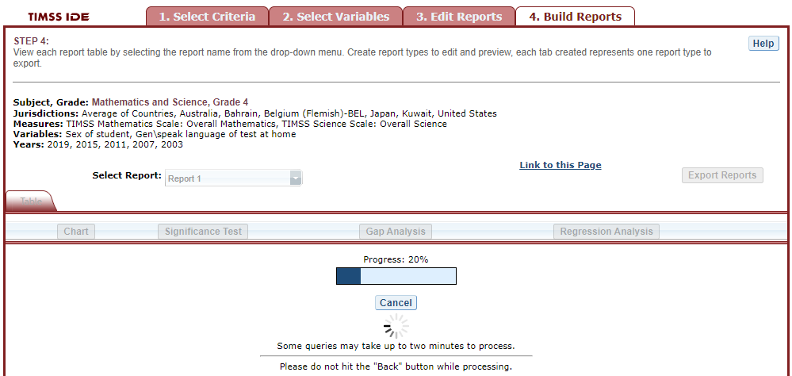
4.C. Charts
To create a chart, go to Select Report on the Build Reports screen to choose the report of interest from the drop-down menu, and then click the Chart link (see exhibit 18).
You will be able to create many types of charts and customize them. Section 4.E. Create Charts—Chart Options provides a summary of the available features and how they can be customized.
Exhibit 18. Viewing reports as charts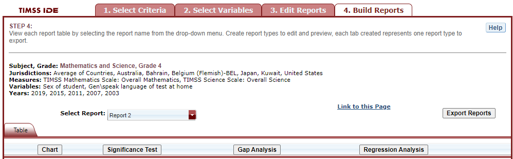
4.D. Create Charts—Chart Options
When you click Chart, your screen will present data options pertaining to Jurisdiction, Year, and Statistic (see exhibit 19). Only the statistics option(s) used to report data in the previous step will be presented, and only one statistics option can be selected at a time. For example, Percentiles will appear as the only data option to build the chart if the table created in the previous step is reporting data with only percentiles selected as the statistics option.
Below, you can select Bar Chart, Column Chart, or Line Chart (see exhibit 20). If all of the percentiles are chosen as the statistics option, you also have the option of selecting a Percentile Chart.
After selecting a chart type, change any data dimensions from the drop-down menus for Bar, Column, or Line Values and Values Grouped by. Any new variables that you created at step 3, Edit Reports, will be available for selection, but only if you selected the variables (by clicking the checkbox next to them) and pressed Done after you edited the report.
Once you are finished with the Chart Options, click the Create Chart button in the lower-right corner of the screen.
Exhibit 19. Data options for charts
Exhibit 20. Chart options
Clicking Create Chart takes you to the exportable version of the chart (see exhibit 21). You can subsequently click “Back to Chart Options” (located in the upper-left corner, below Chart) to make more changes.
Exhibit 21. Completed chart
To make an additional chart from the same report or table, click the Chart link on the Build Reports screen. If you don’t start the chart process again by clicking the Chart link, the new chart will overwrite the previous one.
If you wish to make charts from other reports, select another report in the Select Report drop-down list. (If other reports were not checked in step 3, Edit Reports, go back to step 3 and check the ones you want. Then, when you advance to step 4, Build Reports, the reports will appear in the Select Report drop-down list.) If you need to create new reports, go back to step 1, Select Criteria, and/or step 2, Select Variables. Remember to export any completed charts you want to save by using the Export Reports function before leaving the Build Reports screen. (For further information, see Section 4.H. Export Reports.)
4.E. Significance Tests
Tests for statistical significance indicate whether observed differences between estimates are likely to have occurred because of sampling error or chance. “Significance” here does not imply any judgment about absolute magnitude or educational relevance. It refers only to the statistical nature of the difference and whether that difference likely reflects a true difference in the population.
With your report of interest selected, click the Significance Test link, which is located to the right of the Chart link (see exhibit 16 and 21). You first need to decide which variable you want to test and the criterion by which you want to test it (i.e., between jurisdictions, within variables, or across years). You will compare or look across the variable’s range of values, so it must have more than one value. You can look across jurisdictions for a variable (that is, compare between two or more jurisdictions) or you can look across the values within a variable for a single jurisdiction. For example, with the variable shown in exhibit 22, you could choose to compare scores of female students between countries and subnational education systems, or you could choose to compare scores of female students and male students.
The general steps for running significance tests are as follows (see exhibit 22):
In the Significance Test window, select either Between Jurisdictions, Within Variables, or Across Years. Then, select the appropriate jurisdiction(s), variable(s), year(s), and statistic(s). For Between Jurisdictions, select at least two jurisdictions. For Within Variables, select at least two variable values. For Across Years, more than one year needs to be selected.
You can enter a Name limited to 25 characters, using only letters, numbers, spaces, underscores, and hyphens (otherwise, by default, the test is named “Sig Test 1”).
Select the output type as either Table or Map. The table option will show the significance test results as a matrix. The map option will show the significance test results on a world map, highlighting countries and subnational education systems that have been selected. The map output is only available when Between Jurisdictions is selected in the first step.
Additional options allow you to select Show table details to display the estimates and standard errors for the table cells. If you selected a map, this option is not applicable, as the map will automatically show score details.
Click the Preview tab located in the upper-left corner, or the Preview button located in the bottom-left corner.
Click the Edit tab in the upper-left corner of the screen if you wish to go back and make changes to the selections you made for running the significance tests.
Click the Done button in the upper- or lower-right corner of the screen to run the significance tests.
Exhibit 22. Significance test options
When the table option is selected, you will get a significance test matrix in which you will see the differences and p values. Using the symbols shown in the legend of the matrix, an indication is also provided of whether one estimate is significantly lower or higher than another estimate or whether there is no significant difference (see exhibit 23).
The alpha level to establish significance for all comparisons is .05. All comparisons within a jurisdiction, within the same year, are made using dependent samples t-tests. Comparisons between jurisdictions, and comparisons between years, even for the same jurisdiction, are made using independent samples t-tests. The TIMSS IDE also uses independent samples t-tests, between a country and a subnational entity that is participating as a benchmarking entity (for instance, in order to compare scores between the United States and Massachusetts or Minnesota, since they each are an independent sample).
Exhibit 23. Significance test table output
When the map option is selected, a global map is shown with the countries and subnational education systems that were previously selected shaded (see exhibit 24). The focal jurisdiction is shaded in green, with all other countries compared to it. The other countries are shaded in colors that indicate whether they are higher, lower, or not significantly different from the focal jurisdiction on whatever measure has been selected. (Note that grey is the default color for countries not selected for comparison.) When you hover over a country, a text bubble pops up indicating the point estimates for that country and the focal jurisdiction. At any point, you may choose a different focal jurisdiction by clicking on another country.
Exhibit 24. Significance test map output
4.F. Gap Analysis
Gap Analysis is included in the IDE to compare differences in gaps shown in a map, table, or chart. These gap differences can be compared between jurisdictions and/or across years.
Exhibit 25. Gap analysis link selection
With your report of interest selected, click on the Gap Analysis link, which is located to the right of the Significance Test link (see exhibit 25). You will need to decide which variable you would like to test (e.g., gender) and the criterion by which you want to test it (i.e., between jurisdictions or across years). The difference measure, or gap, can be viewed between groups, between years, between groups and years, or between percentiles within the selected variable. For example, if you compute average mathematics scores for two countries at two time points for males and females, you can:
at one time point, compare the male-female gap in one country to the male-female gap in another country;
compare the male-female gap at two time points within a country;
compare the difference between the male-female gap at two time points in one country to the difference between the male-female gap at two time points in another country; or
compare the gap for females at two time points in one country to the gap for females at two time points in another country.
Exhibit 26. Gap analysis options
The steps for running a gap analysis are similar to those for conducting a statistical significance test (see exhibit 26). Thus, to run a gap analysis, follow the instructions under section 4.E. Significance Tests, noting the following differences:
The Gap Analysis link should be selected, not the Significance Test link.
The gap analysis does not have a Within Variables option for analysis; the options are Between Jurisdictions and Across Years.
The difference measure (gap) of analysis must be selected from the following: Between Groups, Between Years, Between Groups and Years, and Between Percentiles (if variables are selected for which a difference measure is not feasible, the difference measure option will not appear as available in the Gap Analysis menu).
The gap analysis output is presented in a format similar to that of the significance test output, with one difference: the difference estimate shown in the output is the difference between the gaps selected for analysis. Note that you will still see the significance of these differences just like in a significance test. For example, exhibit 27 shows cross-national differences between male-female score gaps among 8th grade students.
The gap analysis function computes and statistically tests differences between score, percentage, or percentile gaps. All gap comparisons are made using independent samples t-tests with an alpha level of 0.05. Note that the reference group for the gaps is kept constant during the analysis, as opposed to taking the absolute value of the gaps. Therefore, the gap analysis tests whether the magnitude of the gaps differ from each other only when the gaps go in the same direction (e.g., comparing a 5-point gender gap favoring females in one country with a 15-point gender gap favoring females in another country).
Exhibit 27. Gap analysis output
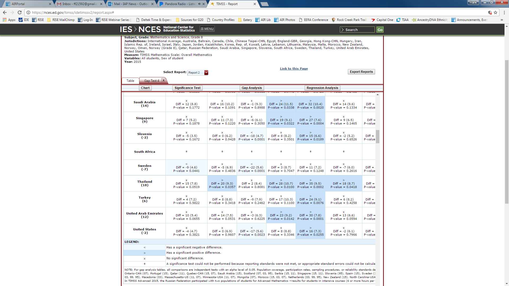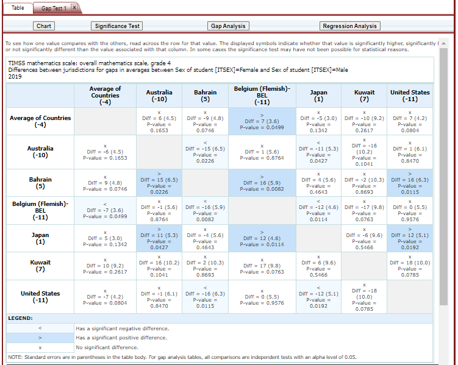
Note that a gap analysis across years cannot be combined with the Between Years or Between Groups and Years difference measures, so you will select the difference measure Between Groups, or, if you have selected percentiles as one of your statistics, you may choose Between Percentiles.
4.G. Regression Analysis
Regression Analysis is included in the IDE to test for the relationship between one or more independent variables with a dependent variable, with the independent variables controlling for each other. The type of analysis performed in this feature of the IDE is referred to as linear regression, with the dependent variable being a continuous variable selected at step 1.
Exhibit 28. Regression analysis link selection
A regression analysis can be performed based on the selections that were made to build your table in the IDE by selecting the Regression Analysis button above the table (see Exhibit 28). The Measure, or continuous variable, that you selected in Step 1 and that is displayed in your table will automatically become your dependent variable for the regression analysis (in Exhibit 28 this is “TIMSS Mathematics Scale: Overall Mathematics”). Please note that continuous variables cannot be used as independent variables. The variables that you selected in Step 2 and that are displayed in your table will become your independent variable options for the regression analysis (in Exhibit 28 this is “Sex of student”).
The general steps for running a regression analysis are as follows (see exhibit 29):
In the Regression Analysis pop-up window, you can enter a Name limited to 25 characters, using only letters, numbers, spaces, underscores, and hyphens (otherwise, by default, the test will be named “Regression 1”).
Select the appropriate jurisdiction, year, and variable(s) for analysis. Please note that you may only choose one jurisdiction and year at a time, but you may choose up to 3 independent variables to be in your report. In order to use up to 3 variables, you must have already created and selected a cross-tabulated report (by selecting 3 variables in Step 2, Select Variables).
Click the Preview tab located in the upper-left corner to view the table format into which your output will be populated. In the Preview tab, an “X” denotes where the output will display.
Click the Edit tab in the upper-left corner of the screen if you wish to go back and make changes to the selections you made for running the analysis.
Click the Done button in the upper- or lower-right corner of the screen to run the regression analysis.
Exhibit 29. Regression analysis options
After you have clicked Done, your regression analysis output will load onto the screen (see exhibit 30). A 0-1 contrast coding is used to code the independent variable, where the first subgroup of the independent variable is the reference group. Using dummy-coded variables in a linear regression is useful for comparing each subgroup against a reference group. For example, in exhibit 30, if the subgroup “Female” is the reference group for the independent variable Sex of student \[ITSEX\], the IDE creates a “Male” dummy variable (1 for respondents who answered “Male”, 0 otherwise). Reference group “Female” is excluded from the regression analysis.
Exhibit 30. Regression analysis output
Using the output from exhibit 30 you can compare the average mathematics achievement of 8th grade students who are female to the average mathematics achievement of 8th grade students who are female. When a single dummy-coded variable is used in a regression, the intercept is the mean of the reference group (e.g., 529.0473), and the regression coefficient is the difference between the mean of the reference group and the group identified (coded 1) with the dummy-coded variable (e.g., 11.1312 for students who are Male). Since the regression coefficients are presented with a standard error and a t value, these can be used to test whether a difference between means is statistically significant. Under the Significance column in the output you will see 3 possible signs: 1) < signifies a significant negative difference, 2) > signifies a significant positive difference, and 3) x signifies the difference is not statistically significant.
4.H. Export Reports
Click on the Export Reports button located on the right side of the Build Reports screen to save or print your tables, charts, and significance tests. The report names that appear in the Export Reports window are those that were checked off at step 3, Edit Reports.
Check the files you want to export, and select one of the file formats: HTML (print-friendly), Excel, Word, or PDF (see exhibit 31). All reports that you select at the same time will be exported in one file. In the Excel format, you will be able to increase the visible decimal places visible wherever more precision is available. Because there are many different operating systems in use, you may get an error message with Excel or one of the other formats. Usually, this will not affect your ability to export, so please wait for the software “errors” to resolve.
Charts or maps for each report will only be available on the Export Reports menu if you saved them by clicking Done when you finished each one. If a chart or map that you wish to save or print is grayed out (not available for selection), cancel the Export Reports tool, go back to your chart or map, and be sure to click Done on the last screen. After that, it will be available for export.
Exhibit 31. Export report options